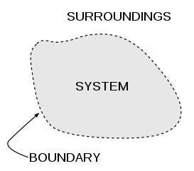
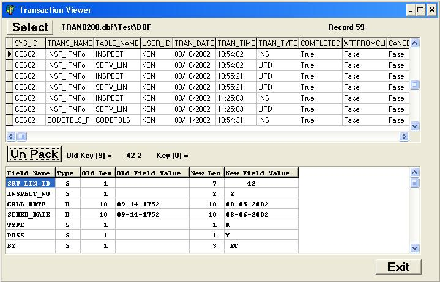
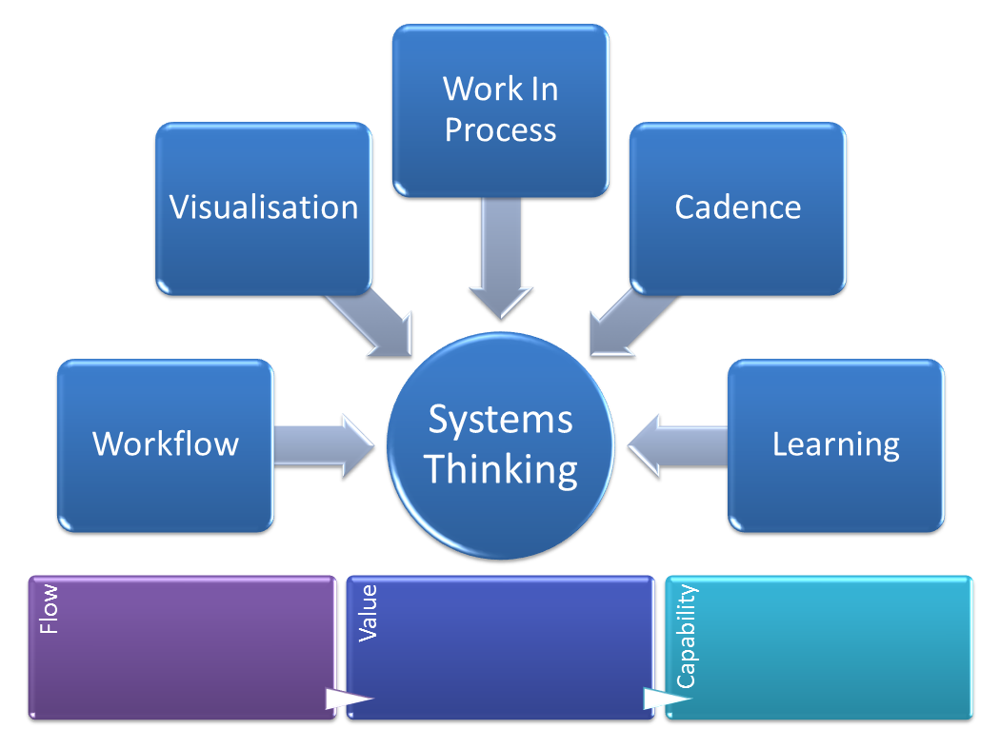
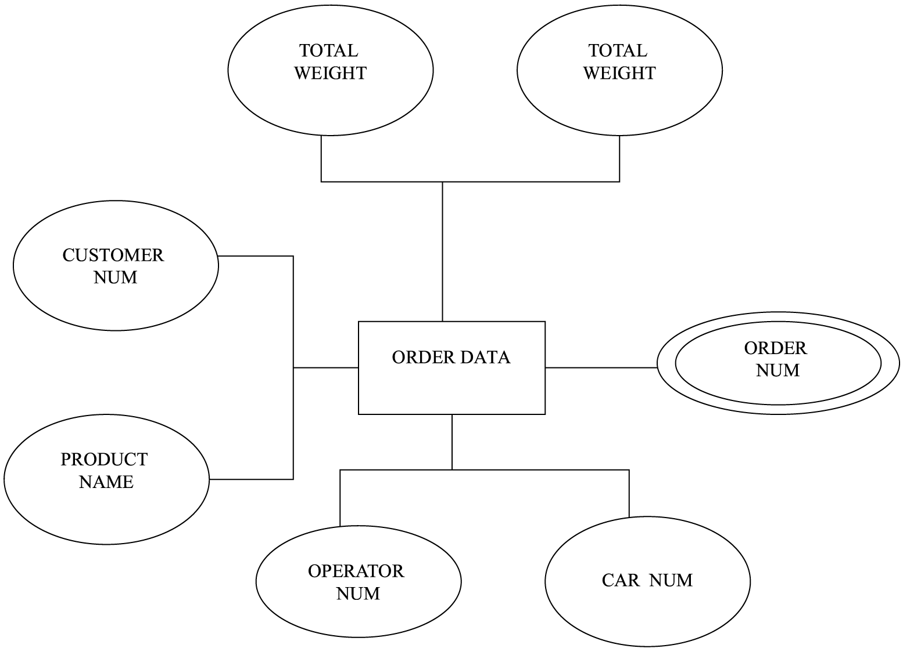
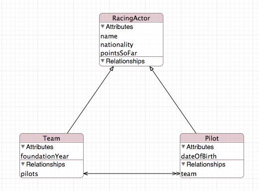
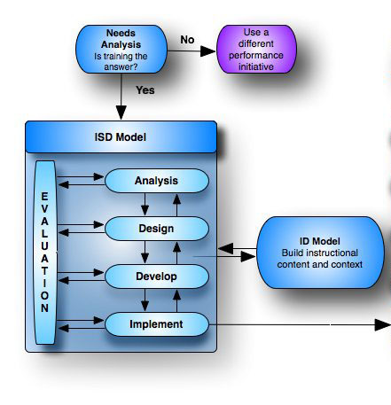
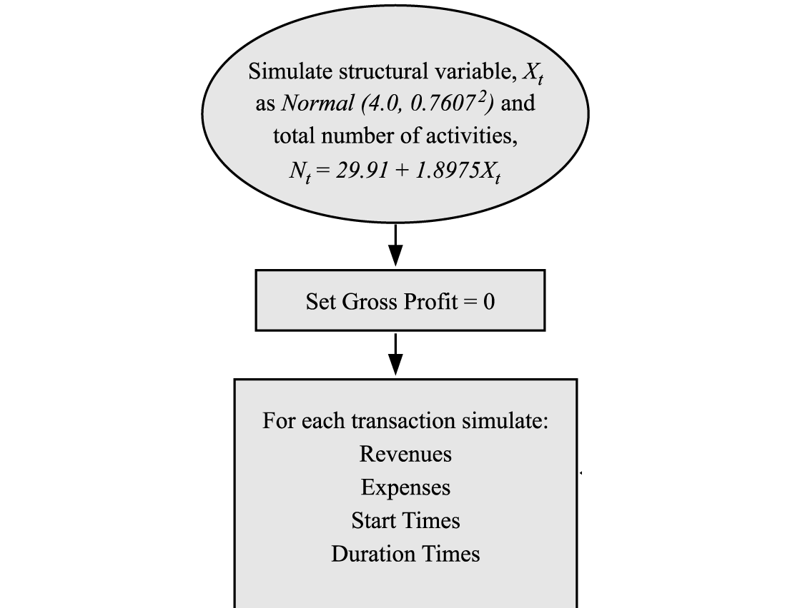

Information systems and organization
Information system and organization teaches the interaction with humans and various forms of interfaces. e.g GUI,Computers,etc.A wikipedia definition of information systems (IS)is the study of complementary networks of hardware and software that people and organizations use to collect, filter, process, create, and distribute data
Topics
Systems
Describe the scope of the module
Transactions & Transaction Processing
To review Day-to-day Activity - Transactions
Decision making and information quality
To further explore the concepts of a Business Process and Computer IS

Requirements and use cases
To introduce the traditional System Development Life Cycle and design methods:Use Cases

Interaction and worldwide web
WIMP: Windows, Icons, Menus, Pointers Form based dialogues WWW operation Transactions on the WWW

A modle fit for purpose
Adding detail to use cases.To look at a Use Case model of a system and be able to spot problems.
Data Entities
To examine the structure and management of transaction data To understand
Data Entities(B)
The use of Keys to represent Relationships
Design
To look at life cycles in business processes
Activity and Simulation
To understand Activity models of the Business
